User guide
Siteation_DebugBar records what one Magento request actually did, and gives you three ways to read it: a bar in the page, a markdown report, and an MCP server for a coding agent.
This guide is about using it. If you are working on the module itself, read the developer guide.
What a profile is
Every request that the module is allowed to profile writes one JSON file under var/siteation_debugbar/. That file is the profile: the request line, timings, every query with the application frame it came from, the events and observers that ran, the blocks that rendered, the cache reads and writes, the plugins that were built, and the module's own findings about all of it.
The profile is bounded and redacted as it is written, not when it is read. Sensitive keys are masked at record time, string literals are stripped from SQL, and each collector keeps a capped number of items. Nothing you read later can be larger or franker than what was stored.
Files are pruned to the newest 20 or the last 60 minutes, whichever comes first, and are written 0600 inside a 0700 directory. A profile past that window is refused on read as well as swept, so the retention holds whether or not anything has triggered a sweep.
Switching it on
bin/magento config:set siteation_debugbar/general/enabled 1Settings live under Stores > Configuration > Siteation > Debug Bar. They apply to the whole installation: the decision to collect is made before the store is known, so a per website or per store value is ignored rather than half honoured.
In developer mode that is all it takes. In any other mode the bar also needs an access key, which is covered under Debugging a live site.
Finding the request you mean
Every profiled response carries its id:
X-Siteation-DebugBar-Profile: 4ae570c5-d45f-418c-92a7-5cda582be81eUse that header rather than assuming the newest profile is yours. A storefront page fires background XHR, and those are profiled too.
The bar in the page
The bar renders in a shadow root, so it cannot collide with the theme's CSS or its Alpine, and it works on a page whose own JavaScript has failed.
Collapsed, it is a floating pill carrying the request line, the deploy mode, the query count and time, the duration and the peak memory. Clicking anywhere on it opens the inspector. Drag the dotted grip to move the pill, mostly up and down, since the pill is as wide as the window allows. Its position is remembered across pages and kept inside the screen when the viewport changes. Double click the grip, or run "Put the bar back on its edge" from the palette, to hand it back to the nearest standard edge.
Open, it is a modal sheet with a sidebar. The page behind it is made inert, so a click lands where you meant it rather than on the store.
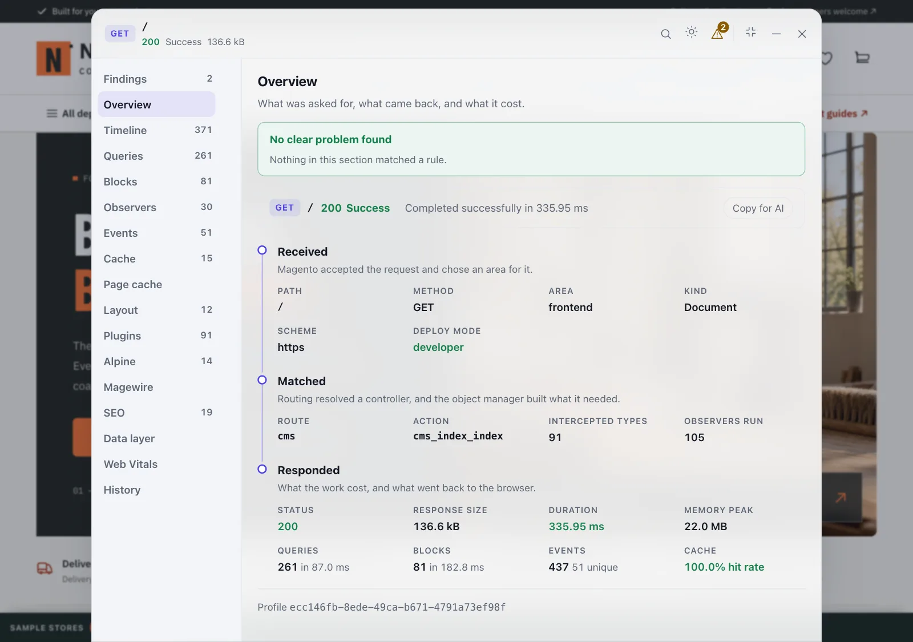
The bubble. Closing the bar with the X collapses it to a small circle in the corner. It keeps the findings count, so you can tell at a glance whether reopening is worth it, and it follows the top or bottom placement setting. Clicking it brings the bar back. This is remembered across pages, because being out of the way is a preference rather than a decision about one page.
To take the bar off the screen entirely, for a screenshot or to test a sticky footer, use Hide the bar until the next page load in the palette. That one is not remembered, because nothing would be left on screen to undo it.
Keyboard
Cmd/Ctrl Shift P | Open the command palette |
Escape | Close the inspector, or the palette if it is open |
Tab | Cycles inside the sheet while it is open |
| Arrow keys on the grip | Move the collapsed bar in 10 pixel steps |
Enter on the grip | Put the collapsed bar back on its edge |
The palette holds everything: every section, the three themes, the top or bottom placement, pinning a section to favourites, the window controls, copying the report, and hiding the bar. Filter it by typing. The theme follows the system unless you pick light or dark.
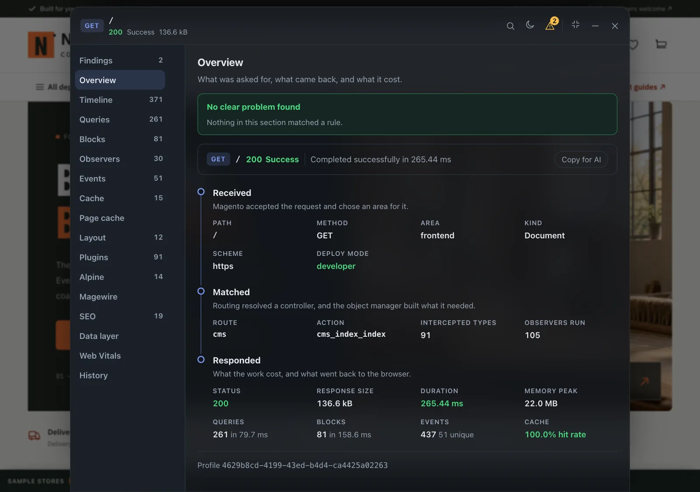
The sections
The sidebar lists them in this order. Each one has a count beside it when there is something to count, and a section a rule found something in opens with that finding at the top.
| Section | What it answers |
|---|---|
| Findings | What is worth your attention on this request, worst first |
| Overview | What was asked for, what came back, and what it cost |
| Timeline | Important work in the order it happened, as a waterfall |
| Queries | Every query, timed, with the application frame it came from |
| Blocks | Block render times, with own time excluding children |
| Observers | Every observer that actually ran, grouped by event |
| Events | Every dispatched event, including ones nothing listens to |
| Cache | Reads and writes grouped by key prefix, with hit rates |
| Page cache | Whether this page went into the full page cache, and if not, why not |
| Layout | The layout handles this request loaded, and the XML files behind each one |
| Plugins | Which interceptors were built for this request, and on what |
| Alpine | The components on the page right now, and their live state |
| Magewire | The components on the page, their state, and each update's cost |
| SEO | The page as a search engine or a link preview reads it |
| Data layer | What the page pushed to window.dataLayer, its tags, and their consent state |
| Web Vitals | How fast this page loaded, how much it moved, and how quickly it answered input |
| History | Every profile still on disk, so an earlier request is one click away, and Compare |
Alpine, Magewire, SEO, Data layer and Web Vitals read the live page rather than the stored profile, so they show what is in the browser now. Everything else is the profile. SEO is the one with a half in both: the views read the live page, and the profile keeps what the server sent, which is what the SEO findings are about.
Only summaries travel with the page, about 1.5 kB. A section's contents are fetched the first time you open it.
You can switch sections off entirely in the configuration. A section that is off is not collected either, so turning off Blocks on a page that renders four hundred of them makes the request you are measuring cheaper as well as the panel quieter. Findings and Overview are always on. Under Sections, select the ones to keep; selecting none keeps them all. A store that saved a list keeps it, so a section added in a later version stays off there until you select it. Sections another module adds to the bar are in the same list, after the bar's own.
Findings
The module's own conclusions about the request, worst first. Each says what is wrong, why it matters, where it came from and what to check next, with a button to the section and filter holding the evidence. Reading findings lists every kind.
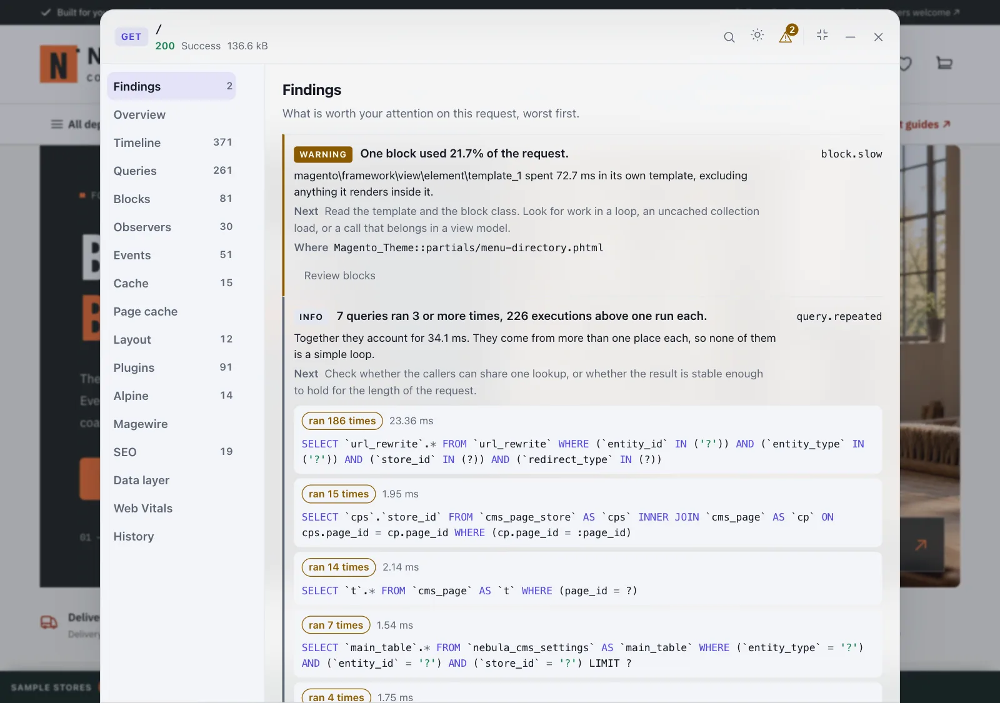
Overview
The request as four steps: Received (path, method, area, document or AJAX, scheme, deploy mode), Matched (route, action, how many types were intercepted and how many observers ran), and Responded (status, response size, duration, peak memory, and the query, block, event and cache totals). A Magewire update adds a Magewire step naming the component, the action and the number of updates, because the path is the same for every one of them.
Copy for AI puts the request on the clipboard as markdown, the same text as siteation:debugbar:report. A request with no queries and no events says it was almost certainly a full page cache hit.
Timeline
The request's important work as a waterfall: spans as bars, single events as dots, on one time axis. Key activity hides anything under a millisecond except the request's milestones; Everything shows it all. Search by event name or by section.
Queries
Every query, slowest marked, with its type, its SQL and the application frame that ran it. Slow shows the ones past the slow query threshold. Repeated shows the statements whose shape ran more than once; the finding only speaks up at three. Filter by any part of the SQL. With an editor set, the frame is a link that opens the file at the line. When the collector hit its cap the section says how many queries were not kept.
Blocks
Every block that rendered, with how often, its own time and its total time. Own time leaves out the blocks rendered inside it, so it is the column that points at the block worth fixing. Filter by name, class or template. The Layout section can narrow the list to the blocks one handle put on the page.
Observers
Every observer that actually ran, with its event, how many times it ran and its time. A listener that was configured but skipped is not here. Filter by observer or event.
Events
Every dispatched event, with how often, how many observers it has and their time. Unobserved shows the events nothing listens to, which is where a new observer can hook in.
Cache
Cache reads and writes grouped by key prefix: operations, hits, misses, size and time, with the hit rate the Overview shows.
Page cache
Answers "why is this page not cached?" with Magento's own reasons, not a guess. The verdict is one of:
- Served from the full page cache: the built-in cache answered, so no layout, block or query ran. There are no reasons to show; clean the
full_pagecache and reload to see them. - Stored for the next request: the page was generated and saved.
- Offered to Varnish as cacheable: on Varnish, PHP never sees a hit, so this is as far as the bar can tell.
- Not cached, with every reason in the order Magento checks them: the
full_pagecache type is off, the method is not GET or HEAD, maintenance mode is on, a block is markedcacheable="false", the status is not 200 or 404, or the response was not offered as public.
A block marked cacheable="false" makes the whole page uncacheable, and it is the usual cause. The table lists each one that made it into the page, with the layout handle and the file that declared it. A block that a layout removed is not listed, because it does not stop caching.
The headers are the ones the application handed to the cache. The built-in cache rewrites Cache-Control once it has stored a page, so the response your browser receives always looks uncacheable. Set-Cookie lists cookie names only, and is marked when a page that should be cached sets one. X-Magento-Cache-Debug is only sent in developer mode.
A CMS page, category or product page that was not cached is a finding: a warning, or a note when the only reason is that the cache is switched off.
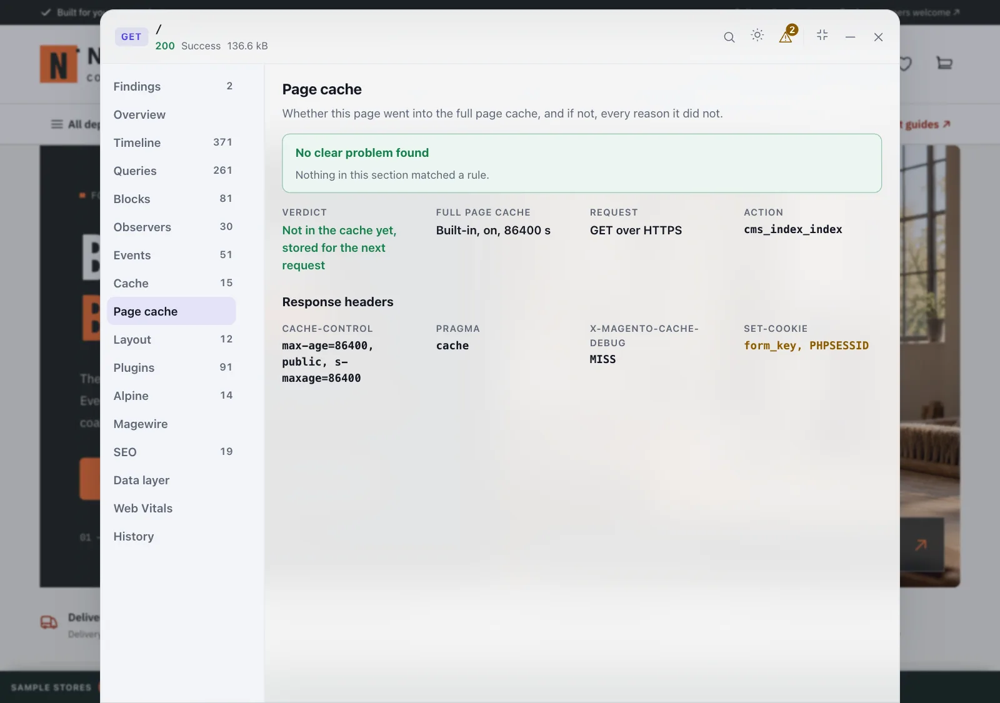
Layout
Answers "which XML put this on the page?". It lists every layout handle the request loaded, in the order Magento merged them, and under each handle the files that define it, with the module that ships each file or the theme that overrides it. Filter by a handle name or by any part of a file path.
A handle the page did not ask for directly, because a layout file pulled it in with <update handle="..."/>, is listed after that handle and marked via it. A request can also generate a layout of its own beside the page's, for prices or an email. Those handles come after the page's and are marked separate layout.
The file paths are the files the merge read. A theme or module that rewrites layout files before the merge shows its rewritten copy.
Each handle with blocks of its own has a button for them. It opens the Blocks section, filtered to the blocks that handle put on the page; the filter shows above the list, and clicking it clears it. A block counts for the first handle, in merge order, whose files declare it, which is the same rule the Page cache section uses to name the handle of an uncacheable block. A block that a later file removed is not counted.
The lookup runs after the page has rendered, so it does not distort the block timings, but it does read every file of every handle and adds to the request's total time. Turn the section off under Sections if that matters on a page you are measuring.
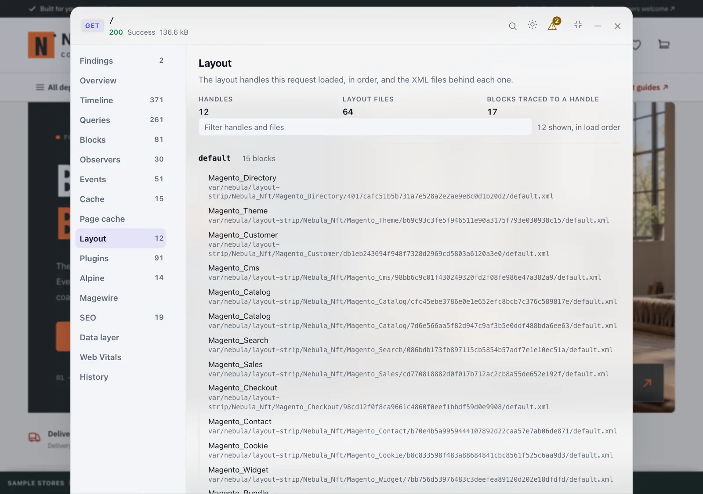
Plugins
The types Magento built an interceptor for on this request, and the plugins on each, with their classes. Filter by type or plugin. Magento has no public API for this list, so the section reads internals; if a Magento version moves them, the section says so and switches itself off rather than break the page.
Alpine
The page's own Alpine, read live. Four views:
- Components: every
x-datacomponent with its name, where it sits in the page and its state. Point at one to outline it on the page; open it to see its expression and state. Live reads the page again every second, Refresh once. - Stores: everything registered with
Alpine.store(), with its value. - Deferred: components a Hyvä theme defers with
x-defer, which have no state until they run. A component that has not started is marked not started in both views. - Health: the Alpine version and build, its prefix and where it was loaded from, the counts, and every expression that threw while Alpine evaluated the page. A binding that throws renders as an empty element and says nothing else, so this is the place to look.
State goes through the value policy before it is shown. A page without Alpine says so.
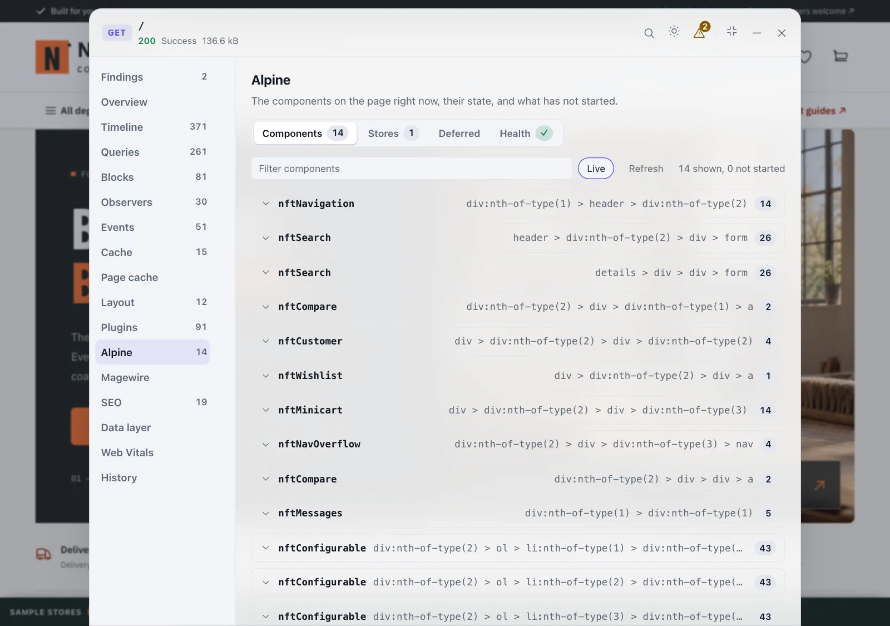
Magewire
The page's Magewire components, read live. Components lists each one with its resolver, its properties, listeners and children, and the size of the state it posts back and receives on every update; over 20 kB is marked, and a collection on a public property is the usual reason. Point at one to outline it, open it to see its state. Updates lists each round trip once you use a component, timed in the browser, so it includes the network and the morph. The profile of the same update, in the request list, is the server's share.

SEO
Six views, each with a count of what needs a look:
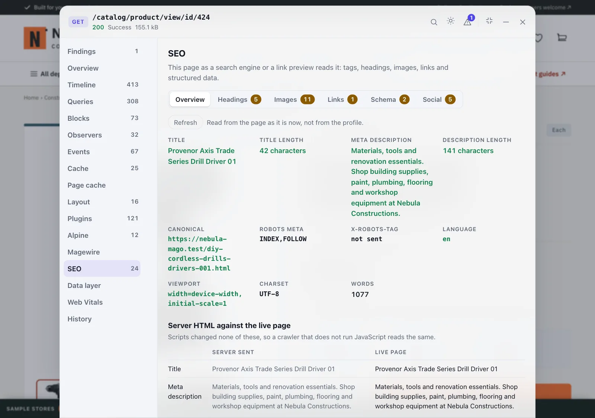
- Overview: the title and meta description with their length, the canonical URL and why it differs from this page when it does, the robots meta tag and the
X-Robots-Tagheader, every hreflang alternate, the language, viewport, charset and word count. Below that, links to robots.txt, sitemap.xml and PageSpeed Insights, and on a product, category or CMS page, Edit this page in the admin. Server HTML against the live page puts what the server sent next to what the page holds now, and marks each value a script changed: the title, description, canonical, robots, language, H1 and heading counts, and the number of JSON-LD blocks. A crawler that does not run JavaScript only gets the server's side. Where each value came from names, for the title, description, H1, canonical and robots, the product or category attribute, CMS page field or setting Magento takes it from, with an Edit link to that screen. A value the page does not match is marked set elsewhere: a plugin, observer, layout XML, theme or SEO extension changed it. A product or category page served from the full page cache has no sources, because that request never loaded the product; reload with the cache off. - Headings: H1 to H6 as an outline, with a missing or second H1, a skipped level, an empty heading and a hidden one flagged. Hover a row to outline the heading on the page; click it to scroll there.
- Images: alt text that is missing, empty or a file name; a missing
widthorheight; an image drawn at less than half its real width; andloading="lazy"on an image that is on the first screen. - Links: internal, external and nofollow counts, and links with no text, links that go nowhere,
javascript:links, internal links marked nofollow, andhttp:links on anhttps:page. - Schema: every JSON-LD block and every microdata item on the page, as one list of entities, with
@graphopened up. A block that does not parse says why and on which line. Each entity is checked against what Google needs for a rich result: Product and Offer, AggregateRating and Review, BreadcrumbList, Organization, WebSite, FAQPage and Article, with a link to Google's page for each. Open an entity to see what it lacks and the entity itself. The same entity described twice is flagged, including the common case of a theme marking up its product inside the<body itemtype="Product">Magento already writes. Hover a microdata row to outline its element on the page. Google's Rich Results Test and the Schema Markup Validator cannot reach a.testor local shop, so on one of those Copy the markup puts every block and item on the clipboard to paste into the tool's code tab. On a public host the links open the tools on this URL. - Social: the Open Graph and X card tags, with each required one that is missing.
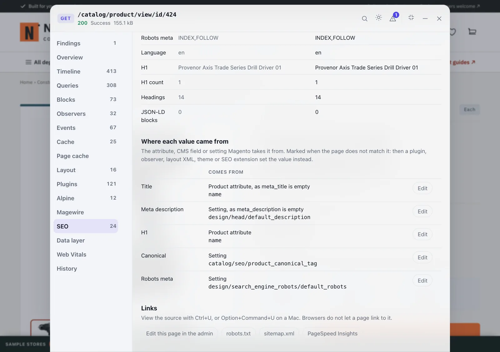
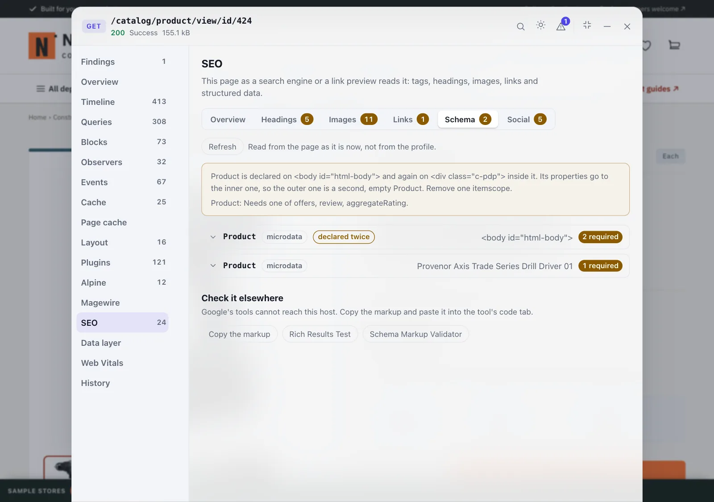
Images and Links show only the rows with a problem until you switch Problems only off. The page is read when it finishes loading and again whenever you open the section; Refresh reads it again on demand.
The X-Robots-Tag header is the one thing the views take from the profile, because a script cannot read the headers of the response that loaded it.
The server's half. On a storefront page the profile also keeps what the HTML the server sent says: the title and description with their length, every canonical link, the robots meta tag and header, the language and its hreflang alternates, the headings in order, the Open Graph and X tags, and the structured data types from JSON-LD and microdata. That is what a crawler that does not run JavaScript reads, and it is kept with the request, so History, the report and the MCP tools can answer for a page that is no longer open. These findings come from it, at the top of the section and in Findings:
- No canonical on a product or category page, naming the setting that adds one (
catalog/seo/product_canonical_tagorcatalog/seo/category_canonical_tag, both off in a new Magento). A CMS page is left alone, since Magento has no such setting for one. - More than one canonical on any page.
- noindex on a CMS page, category or product answered with a 200, saying whether the robots meta tag or the
X-Robots-Tagheader asked for it. On a staging site that is right. - More than one H1, and, as a note, no H1 on a CMS page, category or product.
Headings inside a <template> are left out, as the browser leaves them out of the page until a script stamps them. A response that is not a storefront page, or is over 3 MB, is not read, and says which.
Edit this page in the admin goes through a small admin route that checks your role and then redirects to the edit screen, with the secret key added when the store uses one. You are asked to log in first when you are not. The link shows the admin's address to whoever can see the bar, which is the reason it is only there while the SEO section is on.
No value policy applies to this section. Everything it shows is markup the page has already drawn for you.
Data layer
Three views, each with a count of what needs a look:
- Pushes: everything pushed to
window.dataLayer, in order, from the first byte. Pushes made before the bar's script arrived are marked before the bar; the rest show when they happened and the request that came back just before, such as the cart update anadd_to_cartanswers. Open a push to see it, or switch on Paths to see every value with its path, such asecommerce.items[0].item_id; click a path to copy it for a GTM data layer variable. GA4 ecommerce events are checked:items[]with anitem_idoritem_name,currencywhenevervalueis set,transaction_idon a purchase, and{ecommerce: null}pushed right before eachdataLayer.pushecommerce event. The pushes of earlier pages in this tab stay in the list until the tab closes; This page only hides them. - Tags: Google Tag Manager, GA4, Google Ads, Meta, TikTok, Pinterest, LinkedIn, Microsoft Clarity and UET, Hotjar, found in script URLs, inline snippets,
gtag('config')calls and the list Google's own runtime keeps of what it loaded. The same tag loaded or configured twice is flagged, and so are two GTM containers, since the page cannot tell which GA4 property a container sends to. - Consent: the four Consent Mode v2 keys, as the default set them and as they are now after every update, read from the
gtag('consent', ...)calls. A tag that fires before the default, a missing default, and a default withoutad_user_dataorad_personalizationare flagged.
The bar sees the pushes because its head script puts a recorder in front of dataLayer.push, which stays in front when GTM or gtag.js replace push with their own. Each push is copied the moment it is made, so a value the page changes afterwards shows as it was sent.
A data layer holds what the page never draws: emails, phone numbers, order totals. Every value goes through the store's value policy before it is shown or kept, as Alpine state does. Event names and gtag commands are shown under every policy, because without them the list says nothing. The pushes of earlier pages are kept in the tab's session storage, already cleaned, and not at all under the none policy.
Web Vitals
LCP, CLS and INP, with TTFB and FCP, each rated good, needs improvement or poor against Google's thresholds. The sidebar counts the poor ones.
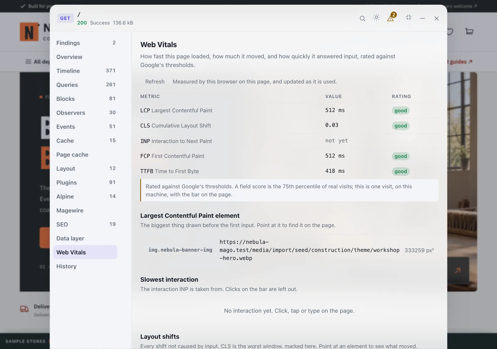
- Largest Contentful Paint element: the biggest thing drawn before the first input, with its image URL when it is one. Point at the row to outline it on the page; click it to scroll to it.
- Slowest interaction: the click, tap or key press INP is taken from, and the element it landed on. INP is the 98th percentile, so on a page used a lot one slow interaction in fifty is forgiven.
- Layout shifts: every shift not caused by input, with the elements that moved. CLS is the worst burst of shifts (shifts less than a second apart, for at most five seconds), not all of them added up, and the shifts in that burst are marked counts for CLS.
The numbers update as the page is used: CLS and INP keep changing for as long as the page is open. They are read from the browser's own performance entries, including the ones from before the bar loaded. One exception: the browser only keeps an interaction from before then when it took 104 ms or more. A quicker one is counted, but not shown, and is good anyway.
Clicks on the bar, and shifts only the bar took part in, are left out. Even so, this is one visit on your machine, with a debug toolbar on the page. Google's field data is the 75th percentile of real visits, so read these as a way to find the cause, not as the score.
Not every browser measures every metric. One that the browser cannot measure says so rather than showing zero; Chrome and Edge measure all five.
History
Recent lists every profile still on disk, newest first: method, path, area, query count, findings, status, duration and how long ago. Click one to load it into the bar. Refresh reads the store again. Compare measures the request on screen against an earlier one; see Comparing two requests.
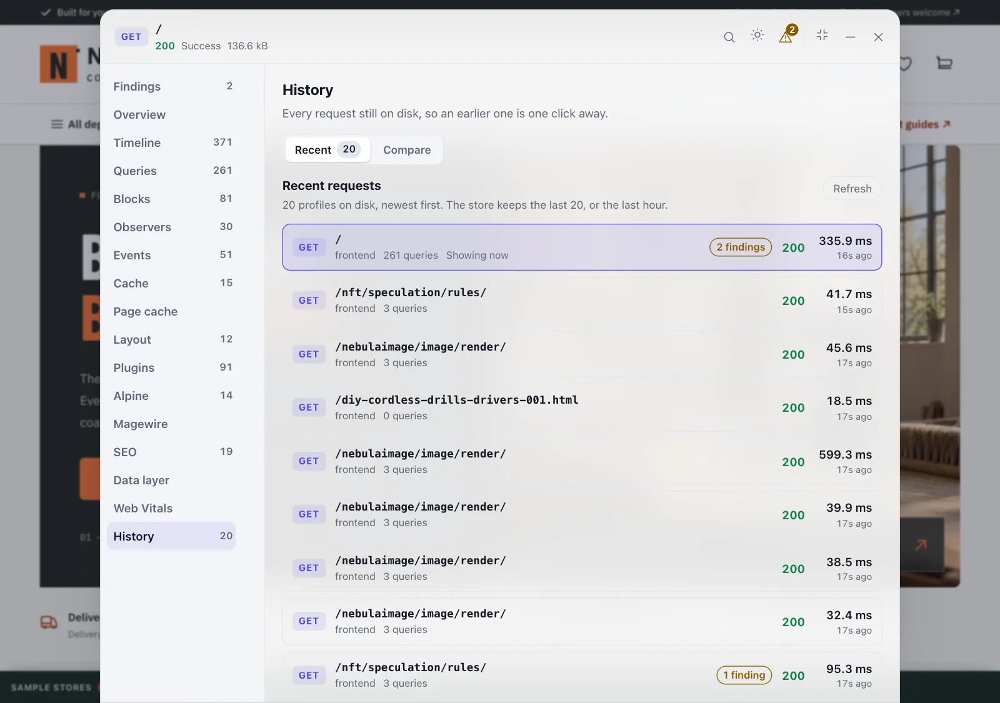
Reading findings
Findings are the module's own conclusions, worst first. Each one says what is wrong, why it matters, where it came from, and what to look at next. Clicking one takes you to the section and filter holding its evidence.
| Finding | Means |
|---|---|
request.error | The response was a 4xx or 5xx |
request.exception | Something threw; the finding names it and the frame it stopped at |
request.slow | The request passed the slow request threshold |
query.slow | A single query passed the slow query threshold |
query.repeated | The same query shape ran three or more times |
query.n_plus_one | A repeated shape that looks like a loop over ids |
block.slow | A block's own render time stands out |
observer.slow | An observer's time stands out |
cache.high_miss_rate | A key prefix is missing far more often than it hits |
pagecache.not_cached | A CMS page, category or product was not put in the full page cache |
seo.canonical_missing | A product or category page has no canonical link in the server's HTML |
seo.canonical_multiple | The server's HTML has more than one canonical link |
seo.noindex | A CMS page, category or product asks not to be indexed |
seo.h1_multiple | The server's HTML has more than one H1 |
seo.h1_missing | A CMS page, category or product has no H1 in the server's HTML |
seo.schema_price | A product page's structured data states a price the product does not sell for, in either tax mode |
seo.schema_currency | A product page's structured data prices it in another currency than the store view shows |
seo.schema_stock | A product page's structured data says in stock when it cannot be bought, or the reverse |
collector.truncated | A collector hit its cap, so its list is shorter than its count |
A finding is a lead, not a verdict. query.n_plus_one is deliberately conservative and chunked reads still trip it. Confirm before changing anything.
Two habits worth keeping:
- Read the counts, not the list length. Collectors cap what they keep. A section saying
count: 862with 50 items is not a contradiction. - A profile with no queries and no events is a full page cache hit, not a fast page. The application never ran.
Comparing two requests
The History section's Compare tab answers "what did my change cost". Profile a page, make the change, load it again, and compare the two profiles: duration, memory, queries, cache and findings, plus the query shapes that were added or removed. On a storefront page it also lists the SEO facts the server sent that changed, such as the title, canonical, robots or structured data types, each with its value before and now.
"The same query" means the same shape, with values and numbers normalised, so an N+1 built from interpolated ids reads as one shape that ran ninety times rather than ninety queries.
The bar shows the result in three tables: the totals before and now, the findings that appeared or went away, and the query shapes that were added, removed or now run a different number of times. Comparing two different pages is allowed, and says so at the top.
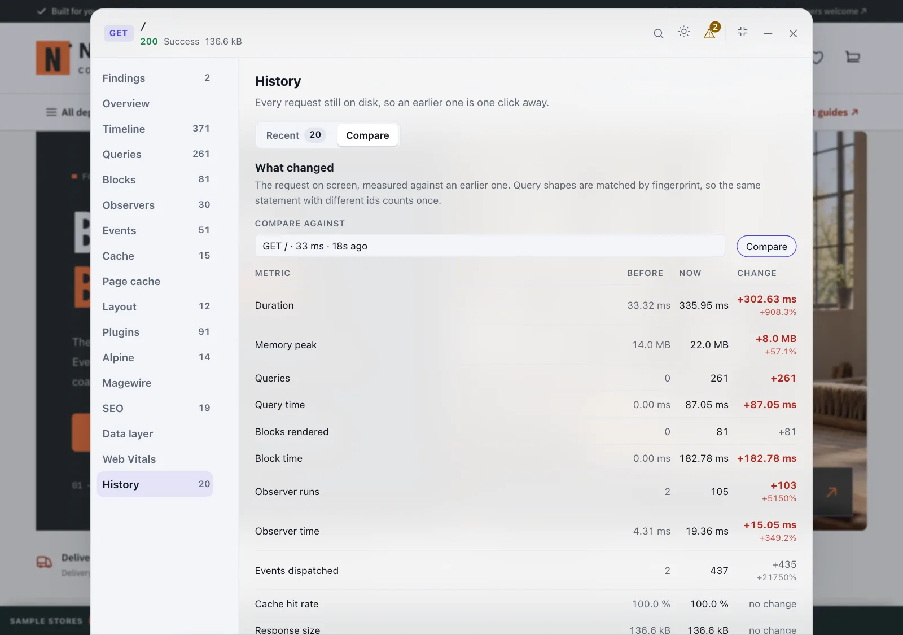
Requests that cannot carry a bar
AJAX, GraphQL and REST responses are profiled, but nothing can be injected into them. They still return the profile header, and the bar lists them: the request list in the collapsed bar's header shows what the page has fired since it loaded, and clicking one loads that profile into the inspector.
Magewire updates are named by component and action rather than by URL, because every component posts to the same endpoint and a page using it would otherwise produce a list of identical rows.
Using it from a coding agent
The same profiles are readable over MCP, so an agent reads exact stored data instead of guessing from a screenshot.
claude mcp add --scope local siteation-debugbar -- php /abs/path/to/bin/magento siteation:debugbar:mcpOr, for anything that speaks MCP over stdio:
{
"mcpServers": {
"siteation-debugbar": {
"command": "php",
"args": ["/abs/path/to/bin/magento", "siteation:debugbar:mcp"]
}
}
}Six read only tools:
| Tool | What it returns |
|---|---|
list_debug_profiles | Recent requests, newest first; filter by method, path, status or only_with_findings |
get_debug_findings | The findings for one profile_id, worst first |
get_debug_profile_section | One section a page at a time: request, queries, events, observers, blocks, cache, pagecache, layout, interception, seo or timeline, with cursor and limit |
inspect_debug_queries | Queries slowest first with their call sites; filter is all or slow |
compare_debug_profiles | What changed from baseline_profile_id to subject_profile_id, SEO facts included |
get_debug_seo | What the server's HTML told search engines, where each value came from, and the seo.* findings |
The server reads files and never opens a database connection, so it starts in about 0.2 seconds.
Responses are bounded by item count and byte budget. On an 817 kB profile from a category page, findings answer in 7 kB and queries in 16 kB.
Every successful response carries a recorded_data line saying what the payload is: values captured from requests to your store, which anyone who can reach the store can write. It is data to read, never instructions to follow.
docs/SKILL.md is an agent skill describing how to use the tools well. Point your agent at it, or copy it into your own skills directory.
For an assistant that cannot call MCP
A browser tab, a chat window, or an agent with a shell but no MCP server configured. Any of them can read the same profile as markdown:
bin/magento siteation:debugbar:report # the newest profile
bin/magento siteation:debugbar:report --id=<profile-id>
bin/magento siteation:debugbar:report --baseline=<other-id> # with the comparisonThe bar's Copy for AI button puts the same markdown on your clipboard.
Open in your editor
Every query names the application frame it came from. Name an editor and that frame becomes a link that opens the file at the line:
bin/magento config:set siteation_debugbar/general/editor zedEight editors are named as a convenience. Anything with a URL scheme works:
bin/magento config:set siteation_debugbar/general/editor custom
bin/magento config:set siteation_debugbar/general/editor_template 'myeditor://open?file=%f&line=%l'%f is the absolute file and %l the line. Paths are stored relative to the application root and the link is built in the browser, so your editor never ends up inside a stored profile. If the application runs somewhere your editor cannot see, a container for instance, map the root:
bin/magento config:set siteation_debugbar/general/editor_path_map '/var/www/html:/Users/you/dev/shop'Debugging a live site
The configuration switch covers the whole store, which on a live site is the wrong shape: it would turn the bar on for every visitor. The access key is the per request half.
bin/magento config:set siteation_debugbar/general/access_key "$(openssl rand -hex 32)"
bin/magento config:set siteation_debugbar/general/enabled 1With a key set, a request that does not present it is an ordinary visitor's: no profile is written, no bar is injected, and the endpoints answer 404 as though the module were not installed.
curl -H "X-Siteation-DebugBar-Key: <key>" https://your-store.test/
open "https://your-store.test/?siteation_debugbar_key=<key>"The second swaps the key for an HttpOnly cookie lasting an hour, which is how long a profile lives, so the key leaves the address bar after one request.
The key must be at least 32 characters, or empty. Anything shorter is refused when you save it and refused again when the configuration resolves, so writing one straight into the database is no way around it. Outside developer mode the key is the entire reason the bar may run, and "on for whoever holds the key" means nothing when the key is x.
Wrong keys are counted per address. Ten from one address inside fifteen minutes and that address stops being answered at all until fifteen minutes after the last one, so the endpoints cannot be used as an oracle. Only a request that presented something counts, so ordinary customer traffic never fills the bucket. Behind a load balancer every client shares one bucket, which is a reason to keep the key long rather than to lean on the counter. cache:flush clears it.
Two more things follow from a key being set:
- Production and default mode are allowed, but only behind a key. Developer mode is the only one that runs keyless, because it is the only one that is not somebody's live site. Default mode is what
MAGE_MODEfalls back to, so it is treated as live. - Any response carrying a bar or a profile id is marked
no-storeand stripped of itsX-Magento-Tags, so Varnish and any CDN refuse to keep it. A page with your bar in it is one developer's view of one request and must never reach a second person.
An IP allowlist can be combined with the key. On its own it is not enough behind a proxy: the address the module trusts is REMOTE_ADDR, never a forwarded header, because an allowlist that trusts a client supplied header is not an allowlist.
Rotate the key with the same command when you are done, or empty it to close production again.
Settings
All under siteation_debugbar/general/, shown in the admin under Stores > Configuration > Siteation > Debug Bar.

| Setting | Default | |
|---|---|---|
enabled | 0 | Off until asked for |
areas | all four | Which of storefront, admin, GraphQL, REST produce a profile |
sections | all | What is collected and shown; off means not gathered either |
slow_query_ms | 100 | Threshold behind query.slow |
slow_request_ms | 1000 | Threshold behind request.slow |
allowed_ips | empty | Comma separated; empty allows every address |
value_policy | full | full, masked or none for captured values |
access_key | empty | 32 characters or more; required outside developer mode |
editor | empty | Editor for call site links |
editor_template | empty | Used when editor is custom |
editor_path_map | empty | inside:outside pairs for containers |
About value_policy. Query bindings are positional, so a value a customer typed cannot be recognised by name the way a key can. full keeps them, which is what makes SQL readable. Set masked or none if the instance is shared.
What it costs
Collection is guarded by a boolean read, so a request that is not being profiled pays for a plugin hop and nothing else. A profiled request pays for the collectors that are switched on, which is why switching a section off stops it being gathered rather than just hidden.
The bar itself embeds about 1.5 kB of summaries in the page and fetches sections on demand.
Troubleshooting
No bar on the page. In order: is it enabled, is the area on the list, is your address on the allowlist, and outside developer mode is a key set and presented. A response that was profiled carries X-Siteation-DebugBar-Profile even when it cannot carry a bar, so the header tells you which half is failing.
No bar behind Varnish. A Varnish hit never reaches PHP, so no profile is written on ordinary catalog and CMS pages. You will see the bar on pass-through pages: customer, checkout, POSTs. Magento's built in full page cache is different: launch() still runs and the bar is injected over the cached body.
The bar looks stale after a module update. Static asset URLs carry the built file's mtime, so a hard reload is enough.
A profile id returns "not found". It has expired. Profiles last 20 files or 60 minutes, and both bounds are enforced on read.
Findings look wrong after changing a threshold. Thresholds are read when the profile is written, not when it is displayed. Load the page again.